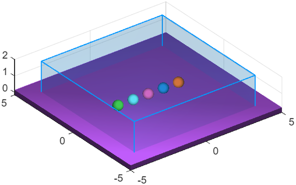

Spatial detection zone
Class phx.Zone | Superclass: phx.base.Object
phx.Zone monitors which bodies are located inside a box-shaped region
of space. It reports the current occupants as an array of phx.Body
objects (Contents) and their number (Count),
keeps cumulative EnteredCount / ExitedCount
tallies, and can call user functions the moment a body enters or leaves the region.
A zone is anchored to a parent body and defined relative to it, so a zone attached to a moving
body travels with it. By default a zone watches every moving body in the simulation except its own
anchor; static scenery (walls, floors) is skipped — unless the anchor itself moves, in which
case static bodies move relative to the zone and stay detectable. Set
Bodies to restrict the watch set to an explicit list.
Detection runs once per substep when the zone is active. For a pure end-of-run tally, create the
zone with SimulationOrder = "none": it is then never evaluated
during stepping (costing nothing per step) and is refreshed on demand with
update.
z = phx.Zone(body) creates a unit-cube zone centered on the origin of
the anchor body. Use Position,
EulerAngles and Size to place and size the
region relative to the anchor.
| Argument | Type | Description |
|---|---|---|
| body | phx.Body (scalar) | Anchor body defining the zone frame. The zone moves with it and never reports the anchor itself as content. |
| Property | Type / Default | Description |
|---|---|---|
| Size | [1 1 1] | Full box dimensions [x y z] in the local frame of the zone, m. |
| Position | [0 0 0] | Center offset in the local frame of the anchor body, m. |
| EulerAngles | [0 0 0] | Zone orientation relative to the anchor, following the phx.Body Euler-angle convention. |
| Bodies | [] (all) | Bodies to watch. Empty watches every non-static body except the anchor (static bodies are kept when the anchor itself moves); set it to restrict the watch set to an explicit list. |
| EnteredFcn | [] | Function called as EnteredFcn(zone,body) when a body enters the region. |
| ExitedFcn | [] | Function called as ExitedFcn(zone,body) when a body leaves the region. |
| Overlay | false | Draw the region box as an overlay (always on top). |
| Count | double (read-only) | Number of bodies currently inside the zone. |
| Contents | phx.Body array (read-only) | Bodies currently inside the zone. |
| EnteredCount | double (read-only) | Cumulative number of enter events since the last pipeline rebuild. |
| ExitedCount | double (read-only) | Cumulative number of exit events since the last pipeline rebuild. |
The inherited SimulationOrder property (from
phx.base.Object) selects when detection runs: "after"
(the default) evaluates the zone every substep after the solve; "none"
makes the zone passive, evaluated only on demand via update.
| Method | Description |
|---|---|
| update(z) | Recompute occupancy now and fire any enter/exit callbacks. Use it to read Count / Contents from a passive zone, which is not evaluated during stepping. Accepts an array of zones. |
clf; view(3); axis equal; grid on; camlight headlight; floor = phx.Body("Type", "static", "Shape", {"Box", "Size", [10 10 0.3]}); for i = 1:5 phx.Body("Position", [i-3 0 5+i], "Shape", {"Sphere", "Diameter", 0.6}); end % a box region above the floor; announce the running count on each entry z = phx.Zone(floor, "Position", [0 0 1], "Size", [8 8 2], ... "EnteredFcn", @(zone, body) disp("inside: " + zone.Count)); sim = phx.Simulation; sim.step(3, 600, 1); disp(z.Count); % bodies currently in the region delete(sim);

Count and Contents.% a passive zone costs nothing per step; refresh it once when finished z = phx.Zone(floor, "Position", [0 0 1], "Size", [10 10 2], ... "SimulationOrder", "none"); sim = phx.Simulation; sim.step(3, 600, -1); update(z); % single on-demand tally disp(z.Count); delete(sim);